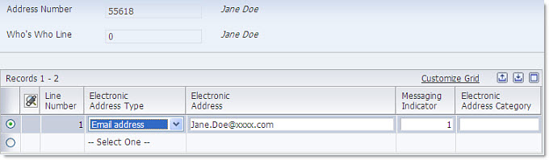
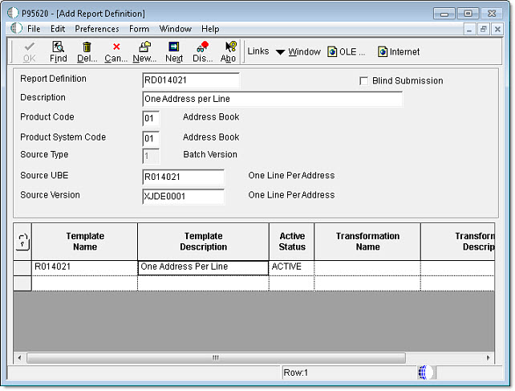
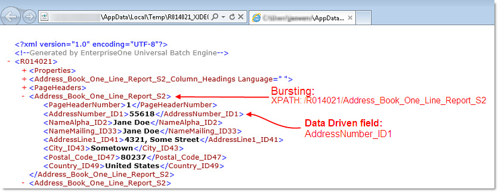
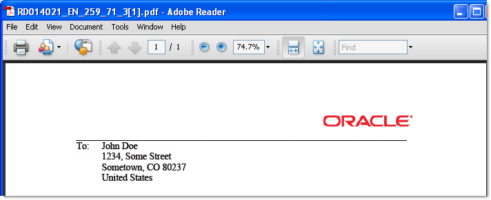

| Purpose |
| Scope |
| Details |
| Overview |
| Understanding Data Driven e-mails |
| Functional Example on How to Use Bursting and Data Driven e-mails with Embedded BI Publisher for EnterpriseOne |
| Assumptions |
| Setup Address Book E-Mail |
| Extract Sample XML from R014021 |
| Identify bursting and data driven fields |
| Design the Template |
| Test Report Definition and Verify Results |
Embedded BI Publisher's bursting feature allows many separate reports to be created from one XML output. By combining bursting with data driven email delivery, it is possible to deliver the bursted outputs to different e-mail recipients based on data stored in the XML output.
This document describes how to use the bursting and data driven email delivery features in Embedded BI Publisher for EnterpriseOne.
This document is intended for JDE developers who wish to use the bursting and data driven email delivery options to be able to send specific and relevant outputs to customers or vendors etc. Basic knowledge of JDE report definitions configuration & execution is required to follow the steps in this document.
A report definition can burst on any level break section defined within the batch or report version that is used as its source of data. Typically, when you burst a report, you break on a level break header section. In Burst Field you specify the complete XPath of the tag that defines the level break section as it appears in the XML data output that was created from the batch process.
The level break section can contain an email recipient in one of the following formats:
If the 'Data Driven Recipient' field does not contain an address book number, the BI Publisher engine will treat the value in the field as a literal email address and send the message to the SMTP server with that literal value as the recipient. For example, if the XML field used in data driven recipient, contains a value of 'John.Doe@xxxx.com' , then the SMTP server will try to send to this recipient. Another example would be if the data driven recipient value is 'JDOE' . In this case, the SMTP server will get JDOE as the recipient value and try to send the email by appending the domain name specified in the server JDE.INI. It would attempt to send to JDOE@xxxx.com and if this is a valid alias in the SMTP server for John.Doe@xxxx.com, then the e-mail would be delivered correctly 2.
This example assumes that BI Publisher for EnterpriseOne is functional. If you have not yet validated it, ensure you can submit a basic report definition and deliver the BI Publisher report to a static e-mail address. For additional information, review Embedded BI Publisher Delivery Options.
Using Address Book application (P01012) identify or setup at least two address book numbers with one associated e-mail address each. Refer to Workflow Setup / External E-Mail Setup for Notifications with Releases 8.9 and Newer for more information on how to setup External Mail for EnterpriseOne.
In this example we have users John Doe and Jane Doe, address book numbers 55600 and 55618 respectively.

Run P95600 and create a new BI Publisher Object (template record) using a blank RTF template to obtain a sample XML Output that can be used to design the new template. This is the template record:

You will also need to create a Report Definition and attach your template to it.
RD: UBE and Template association:

RD: Language and Output:

RD: Bursting and Delivery. Note we will NOT burst the report at this time as we are only interested in obtaining the Report Definition Source (XML Output) to gather the Burst Field, the address book number field and build a template:

Next submit the report definition with data selection set to the two test address book numbers you identified earlier:

This should create the following XML Output where we can identify the level break section to burst by and the address book tags:

Build a template with a layout of your liking. For example:

Click here to download this sample template.
The next step is to upload the new template to P95600 and then use P95620 to modify the Burst and Delivery options of the Report Definition:

Upon running this report Definition two BI Publisher reports will be created and delivered to the e-mail address associated the respective address book numbers found in the XML:

These are the reports Jane and John will receive:

